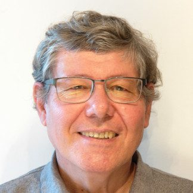

Upcoming Seminars
Stephan Maier, MD, PhD: The Quest for Quantitative Parameters in Magnetic Resonance Imaging
DATE: Monday, January 8th, 2023
TIME: 12:15pm-1:15pm
LOCATION: Anesthesia Lecture Hall and via Zoom
Direction
Located at 45 Francis Street entrance on the L1 level. Enter through the sliding doors at the 45 Francis Street entrance, go straight through the lobby. You will be on the 2nd floor. Take a left onto the 2nd floor hallway called “the Pike”. Continue straight until you see the Mary Horrigan Connors elevators on your right. Take these elevators to level L1. When you exit the elevators, look directly to your left. There will be a set of double doors with a sign for the Anesthesia Department. Enter through these double doors and continue straight until you reach a wall. Make a left and the room will be straight ahead.

Stephan Maier, MD, PhD
Associate Professor
Department of Radiology,
Brigham and Women’s Hospital
Harvard Medical School
ABSTRACT
Numerous quantitative parameters, such as spatial dimensions, volume, nuclear magnetic resonance relaxation, velocity, and diffusion can be measured with magnetic resonance imaging. Many of these quantitative parameters could be highly useful biomarkers, particularly if followed over time, to differentiate normal from disease. Presently, however, these biomarkers have found very limited adoption in clinical practice. The reasons are manyfold. Unlike a blood test that delivers a single value, with magnetic resonance imaging the quantitative parameter is generated for each of many image voxels and a clinically meaningful biomarker may have to be derived by cumbersome, expertise-demanding, region-of-interest analysis. Other limitations, that also impede reproducibility among scanners, are inaccuracies because of spatially non-uniform sensitization and oversimplified assumptions about the relationship between desired sensitization and the actually measured parameter. Also, while for some parameters like spatial dimensions, volume, or velocity the underlying physical meaning is straightforward, the extended physical interpretation of other parameters like relaxation or diffusion is less obvious. Decades of research have brought a better understanding and an armamentarium to efficiently deal with this complexity, even in view of the constraints of scan time, a limitation that cannot be relaxed when scanning patients. In this presentation novel solutions for truly reproducible and more robust diffusion quantification will be presented. Potentially these solutions can contribute to a more ubiquitous deployment of quantitative parameters for clinical decision making, particularly if combined with neural networks for faster processing and automated region-of-interest analysis.
SHORT BIO
Stephan Maier received his medical degree in 1985 from the University of Zurich, Switzerland. Subsequently he completed his Doctor of Medicine at the University of Zurich with a dissertation on comparative studies with magnetic resonance and Doppler ultrasound for quantification of blood velocity and flow in the human abdominal aorta. This was followed by a dissertation on motion sensitive magnetic resonance techniques at the Federal Institute of Technology (ETH) Zurich where in 1992 he received his Doctor of Natural Sciences. He continued his research at Brigham and Women’s hospital in Boston, MA. There he developed the widely used line scan diffusion imaging (LSDI) magnetic resonance pulse sequence. This novel technique provided robust and largely artifact-free diffusion images on the magnetic resonance imaging systems available at the time. It also lead to numerous research studies that were ground breaking in revealing the complexity of the measured water diffusion related signal decay in normal and diseased tissues, with applications in neonatology, psychiatric disorders, brain tumors, and prostate cancer. From 2014 until 2022 he spent significant time at the Gothenburg University, Sweden, where he supervised a group of investigators for further development of reliable and reproducible diffusion imaging techniques. Recently he has returned for a full time commitment to Brigham and Women’s Hospital, with particular focus to promote cutting edge diffusion imaging facilities and techniques for application in tumor imaging and in the context of the hospital’s National Center for Image Guided Therapy (AT-NCIGT). Throughout his professional career he has received continuous research funding support from private foundations and state agencies, including the National Institutes of Health.
Past Research Seminars
Changning Wang, PHD: PET Imaging Probes for Brain Research
Changning Wang, PHD Associate Professor of Radiology Athinoula A. Martinos…
Read moreBernie Owusu-Yaw, PhD: Focused Ultrasound as a Platform for Overcoming Barriers to AAV Gene Therapy in the Brain
Bernie Owusu-Yaw, PhD Research Fellow in Radiology Brigham and Women's…
Read moreOlivier Clerc, MD: Unraveling Cardiac Amyloidosis: From Multi-Modality Imaging to Wide-Range Proteomics
Olivier Clerc, MD Research Scientist Division of Nuclear Medicine and…
Read moreZhou Lan, PhD: Neurometabolic network (NMetNet): A Novel Conceptual Brain Network for Studying Functional Neurological Disorder
Zhou Lan, PhD Investigator Brigham and Women's Hospital Instructor in…
Read moreEva Gombos, MD: Intraoperative Supine Breast MRI in the Advanced Multimodality Image Guided Operating (AMIGO) suite
Eva Gombos, MD Staff Radiologist Department of Radiology Director of…
Read moreJenna Mueller, PhD : Improving Cancer Management in Low and Middle-Income Countries through Human-Centered Biomedical Device Design
Jenna Mueller, PhD Assistant Professor Fischell Department of Bioengineering University…
Read moreRayan Ebnali Harari, PhD: Applications of CNNs in MRI and OCT Imaging: Case Studies and Emerging Topics in Medical Image Analysis
Rayan Ebnali Harari, PhD Instructor in Emergency Medicine Mass General…
Read moreGuigen Liu, PhD: Bendable Graded Index Lens Multimodal Microendoscopy: Advancing in-situ Histopathology
Guigen Liu, PhD Instructor in Radiology Brigham and Women’s Hospital…
Read moreValeria Barletta, MD, PhD: An Overview of Biomarkers in Multiple Sclerosis
Valeria Barletta, MD, PhD Research Fellow in Radiology Brigham and…
Read morePietro Nardelli, PhD: From Macrovascular Changes to Microvascular Defects: Advances in Imaging-based Approaches for Pulmonary Hypertension
Pietro Nardelli, PhD Instructor in Radiology Brigham and Women’s Hospital…
Read morePeter S. LaViolette, PhD: Radio-pathomic Mapping of Brain and Prostate Cancer
Peter S. LaViolette, PhD Robert C. Olson, MD Endowed Professor…
Read moreSeung-Schik Yoo, PhD: Non-Pharmacological Enhancement of Convective Clearance of Intracortical Solutes Using Transcranial Focused Ultrasound
SEUNG-SCHIK YOO, PHD Director, Neuromodulation and Tissue Engineering Laboratory (NTEL)…
Read moreCIPRIAN CATANA, MD, PHD: JOURNEY TO INTEGRATION: FROM ADVANCES IN ORGAN-SPECIFIC PET/MR IMAGING TO STUDYING INTERCONNECTED SYSTEMS.
Ciprian Catana, MD, PHD Director of Integrated PET/MR Imaging Athinoula…
Read moreFlorian J. Fintelmann, MD: Interdisciplinary Research in Thoracic Imaging and Intervention: Opportunities across MGB
Florian J. Fintelmann, MD Associate Professor of Radiology Harvard Medical…
Read moreJEREMY WOLFE, PHD: SEEING MORE THAN WE THINK WE SEE. MISSING MORE THAN WE WANT TO MISS.
Jeremy Wolfe, PhD Professor of Ophthalmology and Radiology Harvard Medical…
Read moreFides Schwartz, MD: Photon-counting CT – What is it and what do we do with it?
Fides Schwartz, MD Research Associate in Radiology Harvard Medical School…
Read moreSHARATH BHAGAVATULA, MD: TRANSLATIONAL RESEARCH IN INTERVENTIONAL RADIOLOGY: EARLY EXPERIENCE IN TRANSLATING AN IMPLANTABLE MICRODEVICE TECHNOLOGY FOR PERSONALIZED DRUG RESPONSE ASSESSMENT
Sharath Bhagavatula, MD Assistant Professor of Radiology Abdominal Imaging and…
Read moreStephan Maier, MD, PhD: The Quest for Quantitative Parameters in Magnetic Resonance Imaging
Stephan Maier, MD, PhD Associate Professor Department of Radiology, Brigham…
Read moreSila Kurugol, PhD: Advancements in Abdominal MRI: Enhancing Quantitative Imaging with Innovations in Diffusion-Weighted and Dynamic Contrast-Enhanced MRI
Sila Kurugol, PhD Assistant Professor of Radiology Director of Quantitative…
Read moreBingxin Zhao, PhD: Multi-organ Imaging Genomics: New Resources and Findings
Bingxin Zhao, PhD Assistant Professor Department of Statistics and Data…
Read morePeter Caravan, PhD: The Future of MR Contrast Agents: Molecular MR and Gadolinium-free Contrast
Peter Caravan, PhD Co-Director, Institute for Innovation in Imaging (i3)…
Read moreNadya Shusharina, PhD: Harnessing DW-MRI to Identify Direction of the Microscopic Tumor Spread
Nadya Shusharina, PhD Instructor in Radiation Oncology Massachusetts General Hospital Abstract…
Read moreLucila Ohno-Machado, MD, MBA, PhD: Data Science to Promote Precision Medicine for All
Lucila Ohno-Machado, MD, MBA, PhD Waldemar von Zedtwitz Professor of…
Read moreSanghoon Kim, MD, MSc: BWH 3T MRS 2HG Optimization Progress Report
Sanghoon Kim, MD, MSc Research Fellow (T32) Department of Radiology…
Read moreSusie Y. Huang, MD, PhD: Characterizing Tissue Microstructure in the Living Human Brain Using High-Gradient Diffusion MRI
Susie Huang, MD, PhD Associate Professor, HMS Radiologist, MGH Abstract…
Read moreZhou Lan, PhD: Recent Statistical Methods for Diffusion MRI
Zhou Lan, PhD Instructor in Medicine, HMS Biostatistics Investigator, BWH…
Read moreDenis Rancourt Peng, MScA, PhD: Self-heating Can Induce Solid Tumor Necrosis
Denis Rancourt Peng, MScA, PhD Professor Department of Mechanical Engineering Sherbrooke University Quebec City, Canada…
Read moreAli Uneri, PhD: Image-Guided Robotics: Closing the Loop in Surgical Robotics Using Interventional Imaging
Ali Uneri, PhD Research Associate, Department of Biomedical Engineering Co-Director, Carnegie Center for Surgical Innovation…
Read moreGabor Fichtinger, DrUniv: Point-of-care-ultrasound Guided Therapies and Interventions in the Global Health Context
Gabor Fichtinger, Dr.Univ. Professor and Canada Research Chair in Computer-Integrated Surgery Queen’s University Kingston, Ontario,…
Read moreAnthony Samir, MD: An Introduction to AI-GUIDE
Anthony Samir, MD Assistant Professor of Radiology Service Chief, Body Ultrasound MGH, Director, MGH Center for…
Read moreAnand Kumar, PhD: Fluorescence Lifetime Imaging: Applications in Preclinical Research, Clinical Diagnosis and Surgical Guidance
Anand Kumar, PhD Assistant Professor of Radiology Department of Radiology Massachusetts General Hospital Harvard Medical School…
Read moreFan Zhang, PhD: Computational Diffusion MRI Analysis Using Deep Learning
Fan Zhang, PhD Instructor in Radiology Department of Radiology Brigham and Women's Hospital Harvard Medical School…
Read moreAaron Sodickson, MD, PhD and Raphael Cohen: Jump-Starting AI Research in Emergency Radiology: Challenges and Solutions
Aaron Sodickson, MD, PhD Division Chief, Emergency Radiology, Brigham and Women’s Hospital Associate Professor of Radiology,…
Read moreGuigen Liu, PhD: Development of a Two-Photon Microimaging-Microdevice System for Four-Dimensional Imaging of Drug Delivery in Vivo
Guigen Liu, PhD Instructor in Radiology Department of Radiology Brigham and Women's Hospital Harvard Medical School…
Read moreHolden Wu, PhD: Computer-Aided and Robotic Methods for MRI-Guided Percutaneous Interventions
Holden Wu, PhD Associate Professor of Radiological Sciences and Bioengineering Department of Radiological Sciences David…
Read moreKishore Rajendran, PhD: Photon-counting-detector CT: Fundamentals, Technical Evaluation, and Clinical Applications
Kishore Rajendran, PhD Associate Consultant, Radiology Research Assistant Professor of Radiology CT Clinical Innovation Center…
Read moreMichael Jerosch-Herold, PhD: Myocardial Tissue Characterization by Magnetic Resonance T1 Mapping
Michael Jerosch-Herold, PhD Director of Cardiac Imaging Physics Brigham and Women's Hospital Associate Professor of…
Read moreSharmila Dorbala, MD, MPH: Molecular Imaging of Light Chain Cardiac Amyloidosis
Sharmila Dorbala, MD, MPH Director of Nuclear Cardiology Brigham and Women's Hospital Professor of Radiology…
Read moreRobert Mulkern, PhD: A T2 Trajectory – with and without Ferenc
Robert Mulkern, PhD Associate Professor of Radiology Department of Radiology Boston Children's Hospital Harvard Medical…
Read moreSanghoon Kim, MD: Introduction to 7T MR Sodium Imaging at BWH
Sanghoon Kim, MD Research Fellow (T32) Department of Radiology Brigham and Women’s Hospital Harvard Medical…
Read moreViviany R. Taqueti, MD, MPH: Quantitative PET-CT Imaging for Diagnosis and Management of Ischemic Heart Disease and Coronary Microvascular Dysfunction
Viviany R. Taqueti, MD, MPH Director, Cardiac Stress Laboratory Assistant Professor of Radiology Brigham and…
Read moreBharti Khurana, MD: Making the “Invisible” Visible: Transforming the detection of Intimate Partner Violence
Bharti Khurana, MD Associate Professor of Radiology Department of Radiology Brigham and Women’s Hospital Harvard…
Read morePietro Nardelli, PhD: Deep Learning for Pulmonary Vascular Disease
Pietro Nardelli, PhD Instructor in Radiology Department of Radiology Brigham and Women’s Hospital Harvard Medical…
Read moreHaoyin Zhou, PhD: Laparoscopy Video-based Trackerless Surgical Navigation for Minimally Invasive Liver Surgery
Haoyin Zhou, PhD Instructor in Radiology Department of Radiology Brigham and Women’s Hospital Harvard Medical…
Read moreAndriy Fedorov, PhD: NCI Imaging Data Commons
Andriy Fedorov, PhD Associate Professor of Radiology Department of Radiology Brigham and Women’s Hospital Harvard…
Read morePaul B. Shyn, MD: PET/CT-Guided Tumor Ablation: Myths and Promises
Paul B. Shyn, MD Associate Professor of Radiology Department of Radiology Brigham and Women's Hospital…
Read moreAssaf Tal, PhD: From Function to Cognition: New Spectroscopic Tools for Studying Brain Neurochemistry In-Vivo
Assaf Tal, PhD Assistant Professor Department of Chemical and Biological Physics Weizmann Institute of Science,…
Read moreRobert C. Gentleman, PhD: The Importance of Software and Data (A View of the Future)
Robert C. Gentleman, PhD Executive Director, Center for Computational Biomedicine Harvard Medical School Abstract I…
Read moreGonzalo Vegas Sanchez-Ferrero, PhD: Harmonization of CT Scans: Reducing Confounding Factors in Multicenter Clinical Studies
Gonzalo Vegas Sanchez-Ferrero, PhD Instructor in Radiology Department of Radiology Brigham and Women’s Hospital Harvard…
Read moreSughra Raza, MD & Lisa Becker, PhD: From Mammography to Tumor Metabolism
Sughra Raza, MD Associate Professor of Radiology Harvard medical School Lisa Becker, PhD Postdoctoral Fellow…
Read moreContent carried over from https://ncigt.org/acs/.